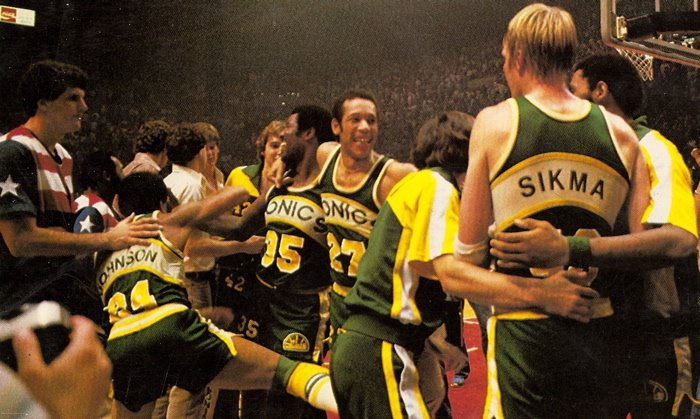

Some of the most famous players on the Seattle Supersonics are players like Ray Allen,
Kevin Durant, Gary Payton and Jack Sikma , all who were inducted or will be inducted into
the Naismath Basketball Hall of Fame.
Because of these players, Seattle was able to advance to the conference finals and was able
to win the 1979 championship
The 1979 Championship:
